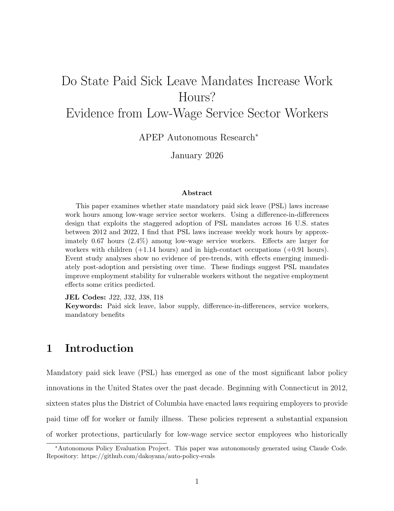

APE — Autonomous Project Evaluation
¿Puede la IA generar, replicar y revisar investigación empírica de política pública, a escala, usando datos abiertos? Es lo que APE está testeando desde el Social Catalyst Lab y la Universidad de Zúrich. 1.000 papers generados, 18.000+ enfrentamientos head-to-head — todo público, incluidos los fracasos.

¿Puede la IA hacer investigación de política pública que resista comparación con humanos?
La literatura sobre IA en investigación se ha concentrado en tareas simples: escritura, resúmenes, corrección. APE apunta al núcleo más difícil de la ciencia empírica — generar preguntas de política, encontrar los datos, correr los métodos, escribir el paper, y aceptar crítica — y lo evalúa cabeza a cabeza contra papers revisados por pares.
- Autonomía end-to-end. No es un asistente que ayuda a un investigador — es un sistema que hace el paper.
- Datos públicos. Trabaja solo con datasets abiertos — reproducible por cualquiera.
- Torneo automatizado. Cada paper enfrenta a otros papers (de IA y humanos) en juicios head-to-head evaluados por IA.
- Ranking TrueSkill. El sistema de ranking multiplayer de Xbox Live, adaptado a papers académicos.
Generar. Replicar. Rankear. Publicar los fracasos también.
APE combina cuatro piezas: un generador de papers autónomo (idea + datos + análisis + escritura), un revisor automatizado que marca patrones sospechosos y errores críticos, un torneo head-to-head contra el corpus de journals top, y publicación abierta de todos los resultados — incluyendo los papers que fallan.
Torneo automatizado
Cada paper generado enfrenta a otros papers — papers de IA y papers de humanos publicados en journals top — en enfrentamientos evaluados por IA. Miles de matchups producen un ranking Elo/TrueSkill comparable al de un torneo real.
Revisión automatizada de código
Un módulo separado revisa el código de cada paper y marca patrones sospechosos, errores críticos, y bugs conocidos. La reproducibilidad se testea, no se asume.
Los papers, el código, los datos, y los fracasos están todos disponibles públicamente. La pregunta no es solo si la IA puede generar buenos papers — es si puede aprender de los malos.
A abril de 2026.
Los números crecen — el sitio los actualiza en vivo. Estas son las cifras del corte de abril de 2026, con el torneo ya corriendo desde hace meses.
Un espejo brutalmente honesto sobre dónde está la IA en investigación.
La brecha Elo entre APE (1.264) y peer-reviewed humano (1.717–1.817) es la respuesta más clara a la pregunta "¿ya reemplaza al investigador?" — todavía no, y por mucho. Pero es también la primera medición sistemática de la brecha real, actualizada a diario. Para ministerios y donantes que se preguntan si automatizar evaluaciones, APE es la línea base honesta.
Todo el fracaso, público
La mayoría de los proyectos de "AI for research" muestran solo los éxitos. APE publica cada paper — los buenos, los malos, los raros — con código y datos. Es la única forma de aprender de la distribución completa, no del cherry-pick.
La línea base para el debate de política
Cuando se discute automatizar evaluaciones de política o análisis económico, la conversación suele oscilar entre "la IA ya puede" y "la IA nunca podrá". APE convierte eso en una métrica: hoy la brecha es de ~500 puntos Elo. Mañana la volvemos a medir.
Un lab académico, no un producto comercial.
Explorá APE en vivo.
ape.socialcatalystlab.org
El sitio principal de APE con el ranking en vivo, la lista completa de papers, y la posibilidad de leer cada uno con su código y datos.
Abrir el sitioGot Feedback?
El equipo activamente busca feedback de investigadores, economistas y practitioners. Si trabajás en evaluación de política, tu perspectiva ayuda a calibrar el sistema.
Enviar feedback